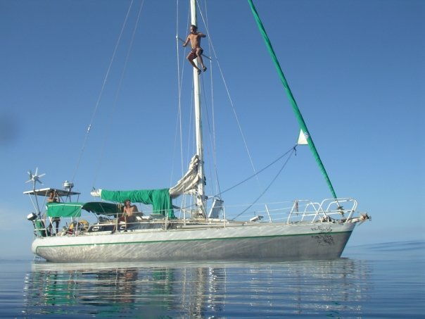

<div class="boat-card">
    <div class="tab" style="margin-top: 30px; margin-bottom: 10px; display: grid; grid-template-columns: auto auto auto auto auto auto auto auto auto auto auto;"> <!-- TODO Improve the grid-template... -->
        <button class="tablinks tab-active" onclick="openTab(event, 'shadok-01');" title="Sommaire">Sommaire</button>
        <button class="tablinks" onclick="openTab(event, 'shadok-02');">Photos</button>
        <button class="tablinks" onclick="openTab(event, 'shadok-03');">Contact</button>
    </div>

    <div class="pcc-dialog-tab-content">
        <div id="shadok-01" class="tab-section" style="display: block;">
            <div style="display: grid; grid-template-columns: auto auto;">
                
                <div style="padding: 14px;">
                    <!--h2>Shadok</h2-->
                    Via 42<br/>
                    <!--ul>
                        <li>Mod&egrave;le du bateau : Dufour 2800</li>
                        <li>Chantier de construction : Dufour</li>
                        <li>Date de mise à l'eau : 1982</li>
                        <li>Longueur : 8,23m</li>
                        <li>Largeur : 2,94m</li>
                        <li>Tirant d'eau : 1,56m</li>
                        <li>Nombre de couchages : 5</li>
                    </ul-->
                </div>
            </div>
            <div>
                <h3>&Eacute;quipement</h3>
                <div class="equipment-css">
                    <span>Pilote automatique&nbsp;: <input type="checkbox" style="pointer-events: none;" checked></span>
                    <span>Traceur : <input type="checkbox" style="pointer-events: none;"></span>
                    <span>Frigo : <input type="checkbox" style="pointer-events: none;"></span>
                    <span>Cuisini&egrave;re : <input type="checkbox" style="pointer-events: none;" checked></span>
                    <span>Panneau Solaire : <input type="checkbox" style="pointer-events: none;"></span>
                    <span>Douche : <input type="checkbox" style="pointer-events: none;"></span>
                    <span>Toilettes : <input type="checkbox" style="pointer-events: none;" checked></span>
                    <span>Speedo : <input type="checkbox" style="pointer-events: none;" checked></span>
                    <span>Sondeur : <input type="checkbox" style="pointer-events: none;" checked></span>
                    <span>An&eacute;mo : <input type="checkbox" style="pointer-events: none;"></span>
                    <span>Survie : <input type="checkbox" style="pointer-events: none;"></span>
                </div>
                <ul>
                    <li>VHF</li>
                    <li>Moins de 6 milles d'un abri</li>
                </ul>
            </div>
            <div>
                <h2>Le Bateau</h2>
                <div>
                    Le 42...
                </div>
            </div>
        </div>

        <div id="shadok-02" class="tab-section" style="display: none; background: black; padding-top: 10px;">
            <span style="padding: 10px; color: cyan;">Le refit du "Shadok" a Port Saint-Louis du Rh&ocirc;ne</span>
            <slide-show id="shadok-slide-show"
                        width="780"
                        height="400"
                        style="line-height: 1em;"
                        slideclick="onSlideShowClick">
                <slide-show-image src="./shadok/refit.shadok/01.jpeg" title="Refit Shadok - 1"></slide-show-image>
                <slide-show-image src="./shadok/refit.shadok/02.jpeg" title="Refit Shadok - 2"></slide-show-image>
                <slide-show-image src="./shadok/refit.shadok/03.jpeg" title="Refit Shadok - 3"></slide-show-image>
                <slide-show-image src="./shadok/refit.shadok/04.jpeg" title="Refit Shadok - 4"></slide-show-image>
                <slide-show-image src="./shadok/refit.shadok/05.jpeg" title="Refit Shadok - 5"></slide-show-image>
                <slide-show-image src="./shadok/refit.shadok/06.jpeg" title="Refit Shadok - 6"></slide-show-image>
                <slide-show-image src="./shadok/refit.shadok/07.jpeg" title="Refit Shadok - 7"></slide-show-image>
                <slide-show-image src="./shadok/refit.shadok/08.jpeg" title="Refit Shadok - 8"></slide-show-image>
                <slide-show-image src="./shadok/refit.shadok/09.jpeg" title="Refit Shadok - 9"></slide-show-image>
                <slide-show-image src="./shadok/refit.shadok/10.jpeg" title="Refit Shadok - 10"></slide-show-image>
                <slide-show-image src="./shadok/refit.shadok/11.jpeg" title="Refit Shadok - 11"></slide-show-image>
                <slide-show-image src="./shadok/refit.shadok/12.jpeg" title="Refit Shadok - 12"></slide-show-image>
                <slide-show-image src="./shadok/refit.shadok/13.jpeg" title="Refit Shadok - 13"></slide-show-image>
            </slide-show>
        </div>

        <div id="shadok-03" class="tab-section" style="display: none;">
            <h2>Plus d'infos...</h2>
            R&eacute;f&eacute;rent : &Eacute;lise Indovino<br/>
            <!-- T&eacute;l : +33 6 75 00 80 15<br/>
            Email : yann.legrand56[@]icloud.com<br/
            Disponibilit&eacute; Boat Club : OUI -->
        </div>
    </div>
</div>
